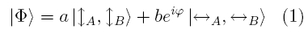
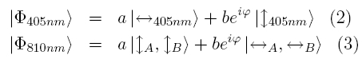
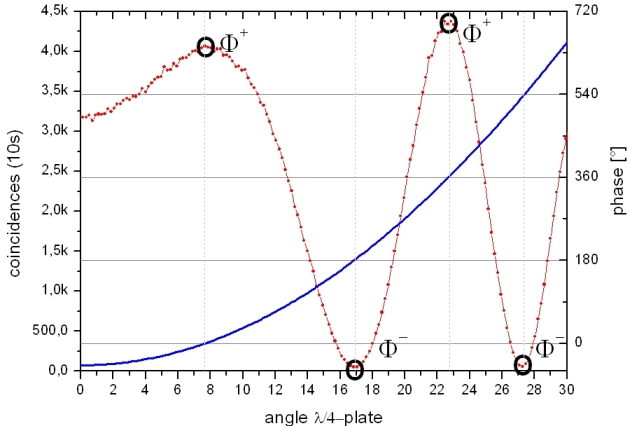
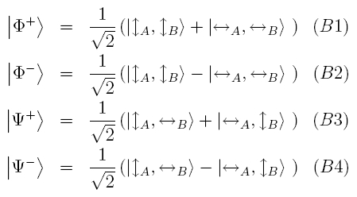

Entanglement chapter C:
Bell states
The general entangled quantum state of two objects A and B is described by equation (1). The degree of entanglement depends on the coefficients a and b, and the phase φ. There are four states with maximum entanglement, named Bell states [Bel64]. In our setup we can adjust a, b, φ and the polarization of Alice's or Bob's photon in order to select different states.

Degree of entanglement
The parameters a and b are determined by the polarization of the pump laser. The PDC crystal consists of two plates (see chapter B). For vertical polarization, a = 1 and b = 0. For horizontal polarization, a = 0 and b = 1. When the pump laser is polarised at 45°, both sections of the PDC crystal are generating photons from the corresponding vertically and horizontally polarised components of the pump light. In this case, a=b=sqrt(1/2), since a²+b²=1.
Shifting the phase φ
By placing a birefringent plate between laser and PDC crystal the phase φ of the pump laser is tuned according to equation (2). Alternatively, one could tune the phase φ of the PDC photons according to equation (3) with a birefringet element in either Alices’s or Bob’s channel. We rotate a thin quartz plate (zero order λ/4 - see in fig. 2 right) around its optical axis in the path of the pump laser [Hal88]. In figure 1, we show the phase φ and the coincidence rates as a function of plate rotation in degrees. The so called Bell state Φ+ corresponds to the maximum coincidence rate, while the Bell state Φ- corresponds to the minimum coincidence rate with φ=180°.


Figure 1: induce phase φ (blue) and coincidences (red)
through the tilt of a λ/4 plate in front the crystal
The four Bell states
The four maximally entangled Bell states are:

The two states ψ+ and ψ- are obtained by rotating the polarization in one channel with a λ/2 waveplate (fig. 2 left). The waveplate holder has two fixed positions (0° and 90°) for the states Φ and ψ. The phase φ (+ or - in the Bell states) is adjusted over the tilt of a λ/4 plate with a mechanical element (fig. 2 right). This element has also two fixed positions. With the two mechanical elements all four Bell states can be exactly prepared.
Figure 2 left: Mechanical element* to switch between Φ states and ψ states.
Figure 2 right: Mechanical Element* for adjusting the phase φ.
With the brass screws, the position of
the lever is set to maximum and minimum coincidence, i.e. φ = 0 and φ = 180°.
Measurement of the Bell states
In the following interactive screen experiment, the four Bell states can chose by adjusing the phase φ (switching + and -) and rotating the λ/2 plate (switching Φ and Ψ). Alice’s detector is kept fix at 45° polarization, i.e. photons have equal chance to be measured as horizontally or vertically polarized. The polarization of Bob’s detectors is continuously changed with a motorized rotation stage. Absorption of transmitted photons in Bob’s detector together with absorption of transmitted photons in Alice’s detector are the coincidences shown in the graph. Can you distinguish all four Bell states on the basis of Malus’ law?
Observation
All four Bell states can be measured with a high visibility according to Malus' law with a transition of 45°. For example, with Φ+ a minimum is observed at 135° detector polarization. Whenever Alice detects a transmitted photon, Bob does not detect a transmitted photon, because his detector is in orthogonal polarization. Note that for a single photon, the probability of detecting it as transmitted through the detectors beam splitter is still 1/2, i.e. Bob’s detector counts a lot of single photons. But non of these incidents occur when Alice detects a transmitted photon due to entanglement.
*) The mechanical elements have been developed and manufactured in the workshop of Physikalisches Institut, University of Erlangen-Nuremberg.
Original data: 4-Bell-states
To chapter D: Prove of non-locality [klick].
Back to overview [klick]
Author: P. Bronner, May 2008